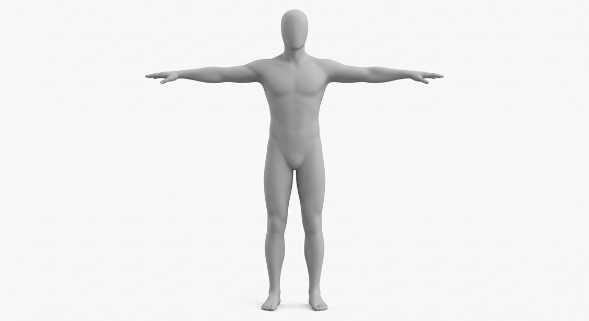

ComfyUI · Pipeline Setup
Setup instructions for customized modules
This pipeline uses several modules that are not included in a standard ComfyUI installation. Before loading the workflow JSON, you need to install the relevant custom node packs via ComfyUI Manager, download the required model weights from HuggingFace, and prepare your own character reference images and a 3D humanoid mesh. The tables below list everything you need.
NON-STANDARD NODES — WHAT TO INSTALL| Node(s) in JSON | Package | Install via |
|---|---|---|
CLIPTextEncodeFlux |
Built into ComfyUI core since late 2024 | Update ComfyUI to the current version — no extra install if up to date |
ControlNetApply |
ComfyUI-Advanced-ControlNet | " data-it="ComfyUI Manager → cerca "Advanced ControlNet"">ComfyUI Manager → search "Advanced ControlNet" |
ApplyPuLIDFlux |
ComfyUI-PuLID-Flux | " data-it="ComfyUI Manager → cerca "PuLID Flux"">ComfyUI Manager → search "PuLID Flux" |
IPAdapterModelLoaderIPAdapterApply |
ComfyUI_IPAdapter_plus (cubiq) | " data-it="ComfyUI Manager → cerca "IPAdapter Plus"">ComfyUI Manager → search "IPAdapter Plus" |
CLIPVisionLoader |
Built into ComfyUI core | No install needed |
Load3DMesh3DPoseEditorOrbitCameraRender3DMeshToDepth |
ComfyUI-3D-Pack | or "OrbitCamera"" data-it="ComfyUI Manager → cerca "3D Pack" o "OrbitCamera"">ComfyUI Manager → search "3D Pack" or "OrbitCamera" |
All files go inside the ComfyUI models/ folder, in the indicated subfolder.
| File in JSON | Download from | Subfolder |
|---|---|---|
flux1-dev.safetensors |
black-forest-labs/FLUX.1-dev ~24 GB — requires licence acceptance |
models/unet/ |
t5xxl_fp16.safetensors |
comfyanonymous/flux_text_encoders | models/clip/ |
clip_l.safetensors |
comfyanonymous/flux_text_encoders | models/clip/ |
ae.safetensors |
black-forest-labs/FLUX.1-dev same repo as flux1-dev |
models/vae/ |
flux-depth-controlnet.safetensors |
Shakker-Labs/FLUX.1-dev-ControlNet-Depth | models/controlnet/ |
ip-adapter_flux.safetensors |
XLabs-AI/flux-ip-adapter | models/ipadapter/ |
sigclip_vision_384.safetensors |
Comfy-Org/sigclip_vision_384 | models/clip_vision/ |
The pipeline uses a 3D humanoid mesh to generate a per-shot depth map that ControlNet uses as spatial guidance (body position, scale, rough pose within the frame). Without the mesh file, the Render3DMeshToDepth nodes produce nothing and ControlNet depth guidance is silently disabled. The mesh does not need to be detailed: a generic neutral T-pose figure is sufficient. Recommended free sources: MakeHuman (export directly as OBJ, simplest option); Mixamo (T-pose FBX, then export as OBJ from Blender); or any neutral-pose humanoid OBJ from CGTrader or Sketchfab. Place the file at ComfyUI/input/generic_humanoid.obj — the Load3DMesh node reads from the input/ folder, the same folder used by LoadImage.
| File in JSON | What it is | Notes | Preview |
|---|---|---|---|
jim_turnaround.jpg |
Full-body reference image of character Jim | Used by IP-Adapter for clothing/posture | |
barbara_turnaround.jpg |
Full-body reference image of character Barbara | Used by IP-Adapter |  |
jim_face_crop.png |
Tight face crop of Jim (~512×512 px) | Used by PuLID for facial geometry | |
barbara_face_crop.png |
Tight face crop of Barbara (~512×512 px) | Used by PuLID for facial geometry | |
jim_barbara_ref.jpg |
Two-character reference — Jim and Barbara together | Visual reference for dual-character shots (shots 2 and 5) | |
generic_humanoid.obj |
A 3D humanoid mesh in neutral T-pose | Used to generate per-shot depth maps for ControlNet. See the note above for recommended sources and where to place the file. |  |
- Update ComfyUI to the current version before anything else (
git pullin the ComfyUI folder). - Install all custom node packs via ComfyUI Manager. Restart ComfyUI after.
- Download all model files and place them in the correct
models/subfolders (see table above). - Prepare your reference images — full-body turnarounds and tight face crops for both characters.
- Export or download a neutral T-pose humanoid OBJ and place it at
ComfyUI/input/generic_humanoid.obj. - Fix the class name if needed: verify that all six ControlNet nodes in the JSON read
"class_type": "ControlNetApply". The JSON provided here already has this fix applied. - Load the JSON in ComfyUI via Load → workflow_api_v2.json.
- Update the four
LoadImagenodes with your actual character image files. - Update the
Load3DMeshnode with the path to your.objfile if the filename differs. - Queue — each of the 6 shots runs sequentially. At 30 steps on a 3090 expect roughly 3–5 minutes per shot.